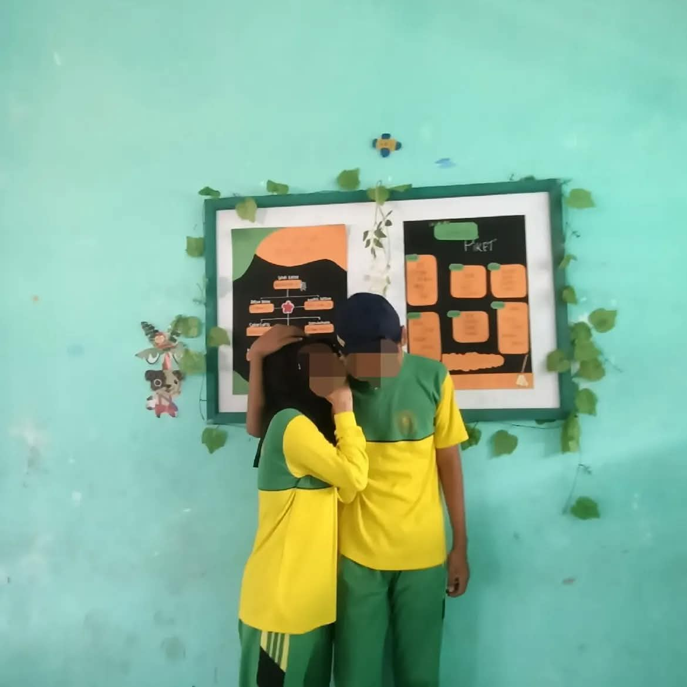
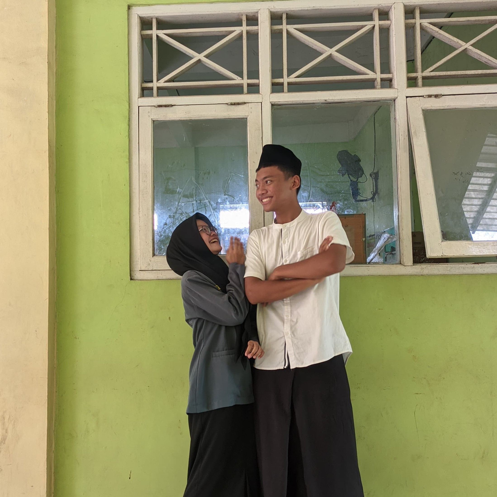
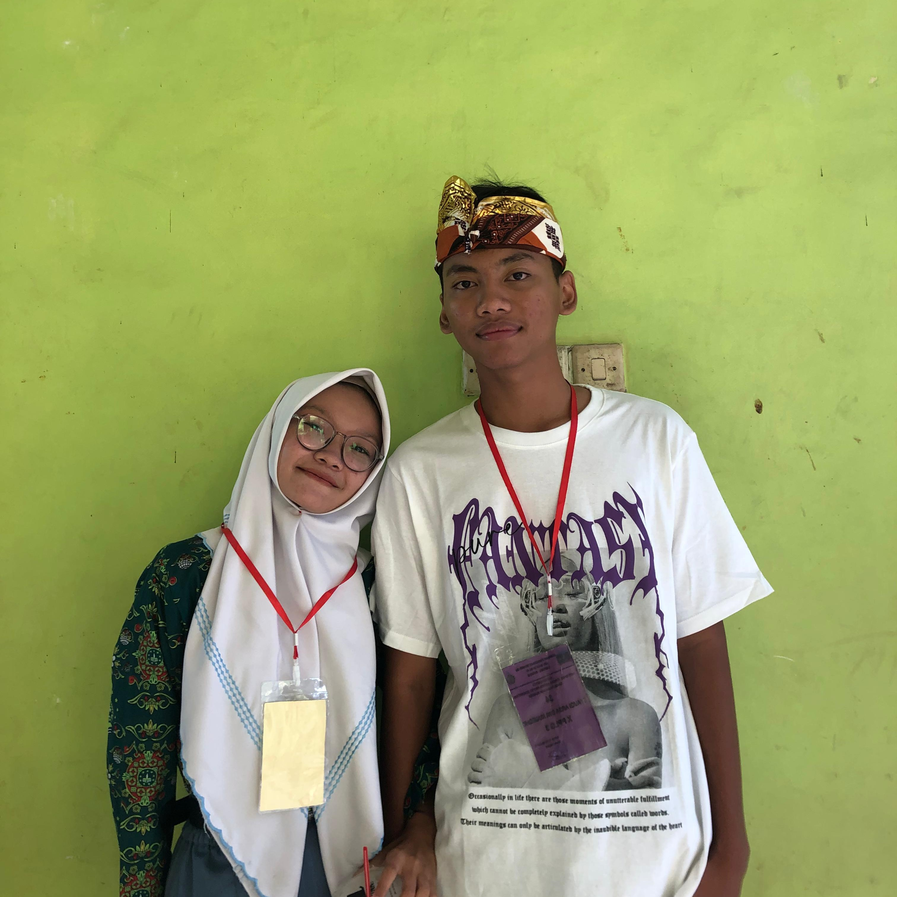
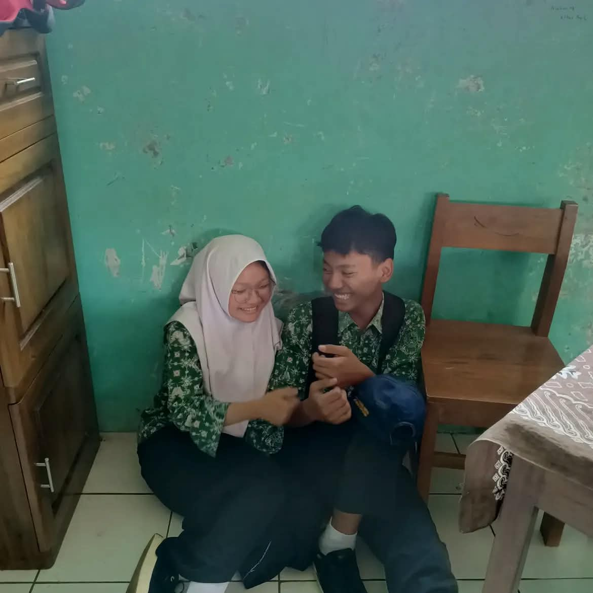
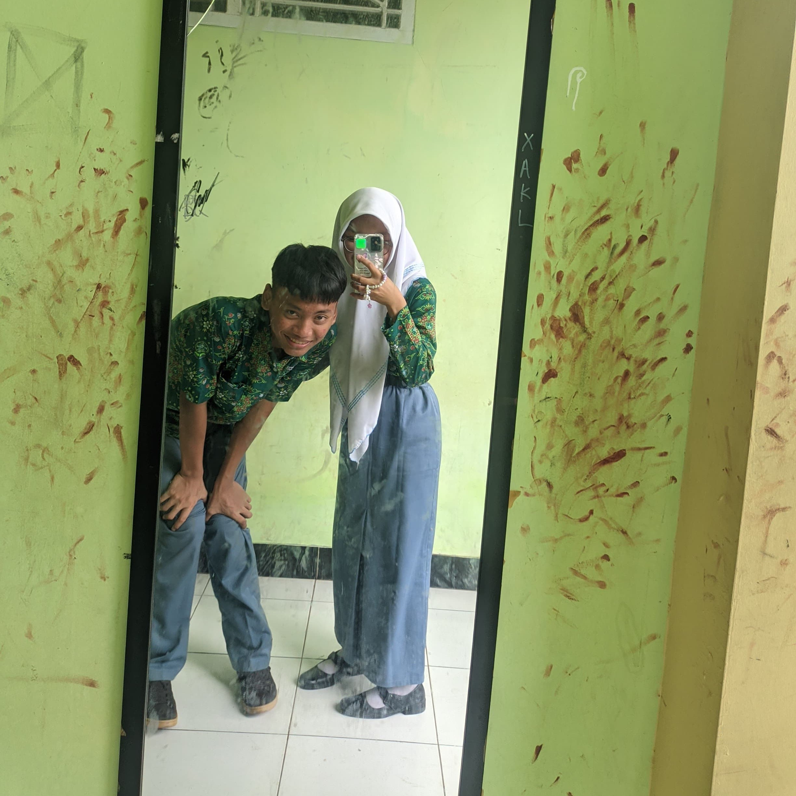
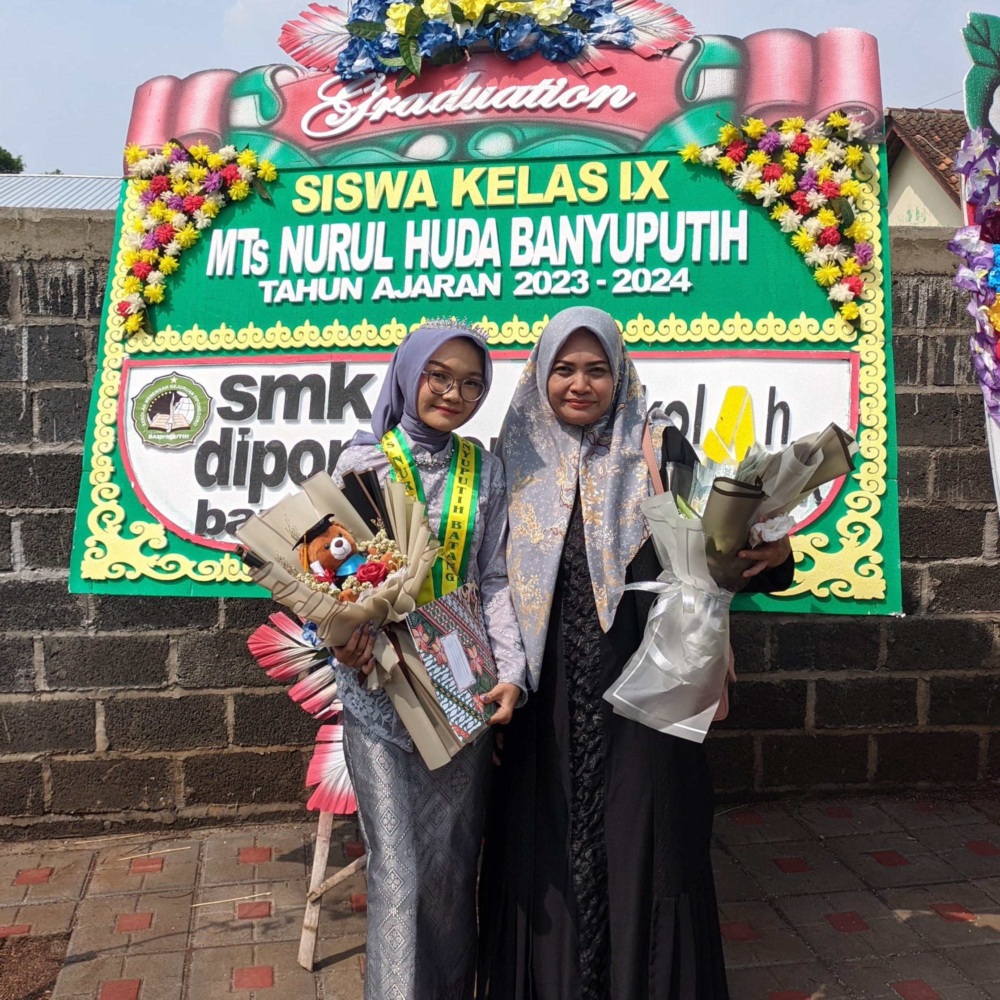
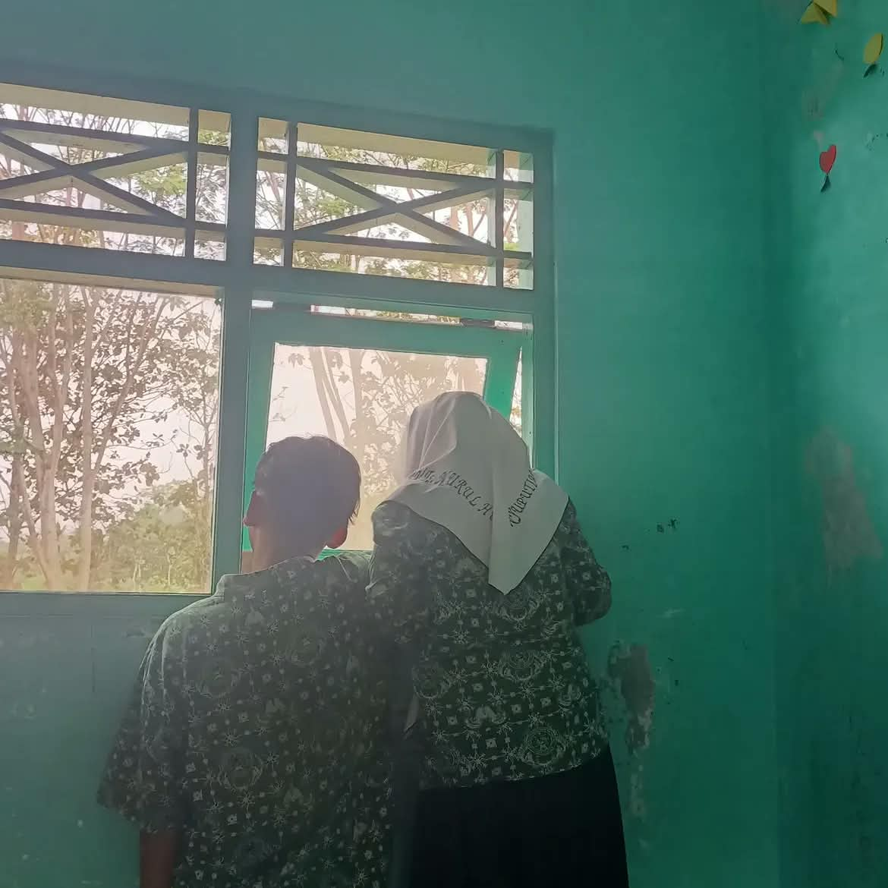
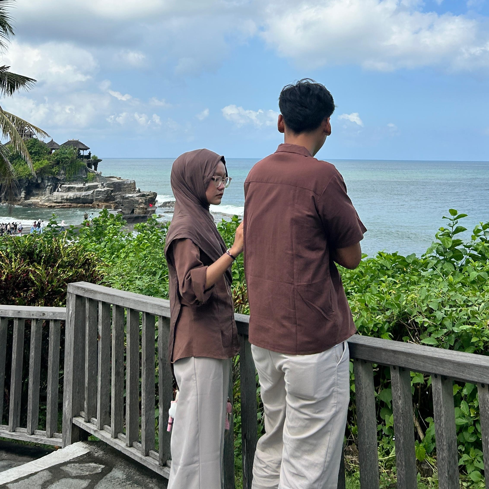

sebuah halaman kecil, untuk seseorang yang besar artinya
Halaman ini kubuat untuk menyimpan rasa yang kadang sulit terucap—tentang betapa berartinya kamu, dan betapa aku bersyukur kita saling menemukan.
gulir ke bawahaku dan kamu memiliki pemikiran yang berbeda maka pesan ini ditulis pelan-pelan, supaya setiap katanya sampai
Sayang, aku ingin kamu tahu bahwa hari-hari bersamamu adalah bagian favoritku dalam hidup ini. Dari tawa kecil di pagi hari sampai pelukan hangat di penghujung malam, semuanya terasa pas—seolah dunia sedang menata ulang dirinya agar kita bisa terus berjalan berdampingan.
Mungkin sekarang kita jalan masing-masing dulu ya. Aku juga nggak tahu ke depannya bakal gimana, tapi aku percaya kalau memang kita masih punya kesempatan, suatu saat nanti kita bakal dipertemukan lagi. Dan kalau kesempatan itu datang, aku bakal perjuangin kamu lagi, dengan segala yang aku punya dan semampuku. Aku nggak janji semuanya bakal sempurna, tapi aku bakal berusaha lebih baik dari sebelumnya. Karena kalau nanti kita dipertemukan lagi, aku berharap pilihan kamu masih tetap aku. 🤍
Harapanku untuk kita
dengan cinta yang terus bertumbuh








momen-momen kita lucu yaa...